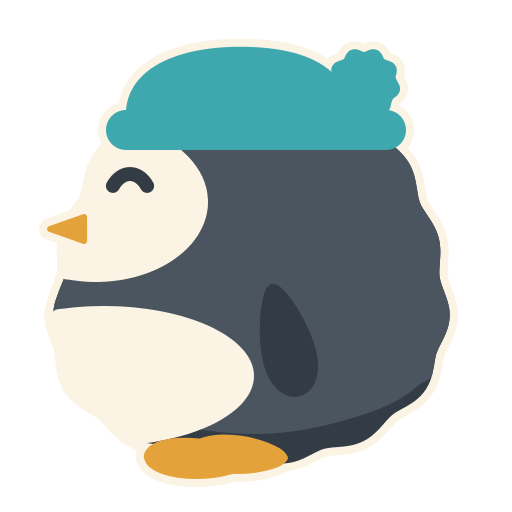
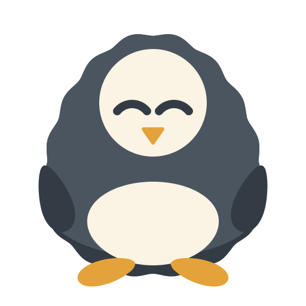
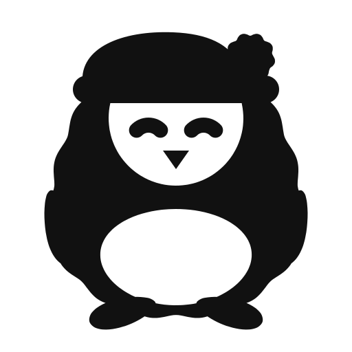
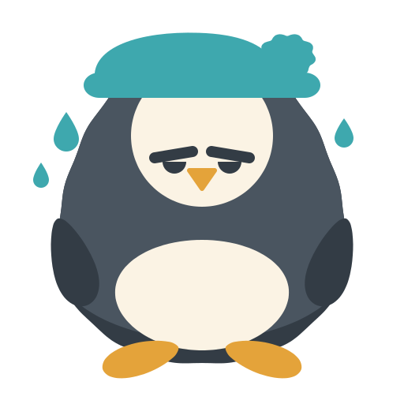
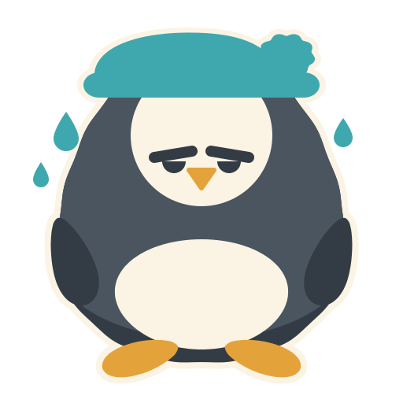
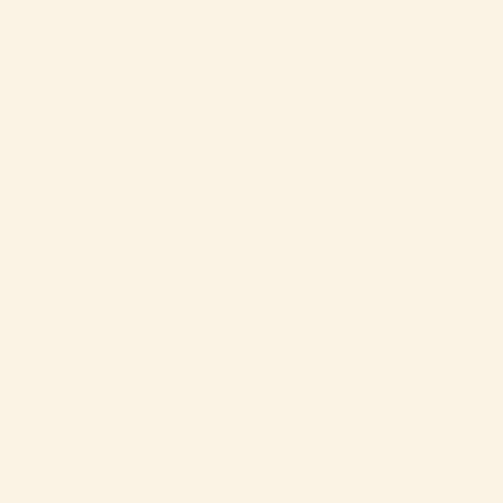

Principal e vistas
Cópia sem alteração da arte aprovada. Vistas de frente, de lado e de três quartos para o modelo 3D.




Poses aprovadas
Cópia sem alteração. A pose de camping é a de frio.


Sem acessório
O filhote sem o gorro: continua o mesmo personagem.

Uma cor
Uma tinta só, com face, barriga e olhos recortados. Positivo (tinta #111111) no fundo claro; negativo (tinta branca) no fundo escuro.


As 7 expressões para o modelo 3D
Referência 2D do MSC-11, na mesma construção. As marcadas como nova foram desenhadas agora e ainda não foram vistas pelo responsável nem pelo QA.





Ícone do app
O ícone grande ao lado do mesmo ícone em 48 px reais.



Paleta oficial
- Ardósia
#4A5560
penugem (corpo) - Ardósia-escura
#333C45
sombra, nadadeiras, olhos - Creme
#FBF3E4
face, barriga, fundo do ícone, contorno da versão escura - Âmbar
#E4A33A
bico e pés - Verde-azulado
#3EA8AE
gorro (acento) - Tinta única
#111111
versão em uma cor, positivo - Branco
#FFFFFF
versão em uma cor, negativo